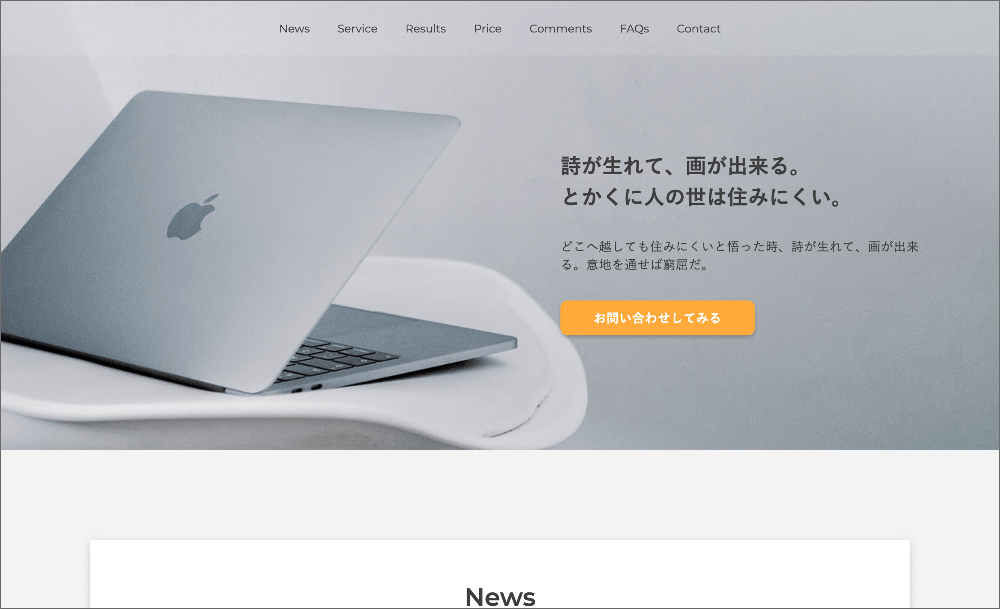

30DAYSトライアル 2nd 最終課題
HTML / CSS / jQuery
学習カリキュラム「30DAYSトライアル」の第2弾の最終課題で制作。
用意されたXDのデザインカンプをもとに、一からコーディングしました。
特に意識した点として、全体的に要素の配置が複雑な箇所（背景色やスライダー、Map等）は調整にやや苦戦しましたが、デザインに正確にピクセルパーフェクトでコーディングしています。


HTML / CSS / jQuery
学習カリキュラム「30DAYSトライアル」の第2弾の最終課題で制作。
用意されたXDのデザインカンプをもとに、一からコーディングしました。
特に意識した点として、全体的に要素の配置が複雑な箇所（背景色やスライダー、Map等）は調整にやや苦戦しましたが、デザインに正確にピクセルパーフェクトでコーディングしています。